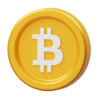
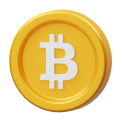

-
1
 T doge foodKYCAUDITSAFUDOXXGameBSCPRESALE91232131
T doge foodKYCAUDITSAFUDOXXGameBSCPRESALE91232131 -
1T doge foodKYCAUDITSAFUDOXXGameBSCPRESALE91232131
-
1T doge foodKYCAUDITSAFUDOXXGameBSCPRESALE91232131
-
1T doge foodKYCAUDITSAFUDOXXGameBSCPRESALE91232131
-
1T doge foodKYCAUDITSAFUDOXXGameBSCPRESALE91232131
-
KYC- KYC stands for Know Your Customer and is a process used by many crypto projects to help ensure the safety and security of their users.
-
AUDIT- Process of verifying the accuracy, security, and quality of a project's, through a rigorous review of the codebase, experts can identify security vulnerabilities, bugs, and other inconsistencies.
-
SAFU- Secure Asset Fund for Users is a crypto-asset security fund established by Binance, the world’s largest cryptocurrency exchange. It is a reserve fund that serves to protect the users’ funds in the event of a security breach, hack, or other emergency.
-
DOXX- It's a decentralized protocol that allows users to securely store and share their identity data with the world.
- PRESALE - Raising funds before the public sale of the tokens.
- ALPHA - This stage is usually characterized by a high degree of experimentation and risk, as the team works to develop the functioning product.
- BETA - The stage of development where the project's core code and infrastructure are tested and improved upon by developers and early users.
About Token Lounge
AbouL2BEAT is an analytics and research website about Ethereum layer two (L2) scaling. We provide a comparison of the various Ethereum L2 systems available today.
An important differentiator between L2BEAT and similar sites is that L2BEAT is committed to educating users and lists only projects that match our narrow definition of L2. We define layer two as a chain that fully or partially derives its security from layer one Ethereum so that users do not have to rely on the honesty of L2 validators for the security of their funds.
Because of our commitment to education we present various non-trivial metrics aside from Total Value Locked (TVL). We have carefully examined each L2 project to determine the inner workings of their technology as well as the associated risks. To learn about any of our listed projects visit their respective page on L2BEAT.
We have also compiled a list of Frequently Asked Questions that will help explain some of the decisions we made for our site. We hope you find L2BEAT a valuable resource.